ros_arduino_bridge on the Nano
12.7First motion & encoder calibration
12.8The power budget
12.9Battery selection & safety
12.10Power distribution — the DFRobot module
12.11The brain — Ubuntu Server, static IP & SSH
12.12Installing ROS 2 Humble (and fixing a real bug)
12.13Summary, checkpoint, quiz & glossary
For eleven lectures, "the robot" has meant a professional, pre-engineered platform: the AgileX LIMO, with its four bolt-on drive modules, its sealed motor drivers, its factory-calibrated sensors. You learned to drive it, simulate it, sense with it, localize on it, and — in Lecture 11 — open it up and understand the real electronics inside it well enough to test and trust it.
For these last three lectures, you build your own. Not in simulation — a real, physical, wheeled robot, assembled from a bare gear motor, an empty microSD card, and a spool of wire, using every single skill this course has given you: H-bridges and PWM from Lecture 11, ROS 2 node/topic architecture from Lecture 2, URDF from Lecture 4, sensor drivers from Lecture 7, Gazebo from Lecture 6. Nothing here is new in kind — it's everything you already know, applied without a manufacturer's chassis doing the hard parts for you.
Say hello to Forge — the name we'll use throughout this build arc for the differential-drive robot you're about to wire, program, design, and bring to life.
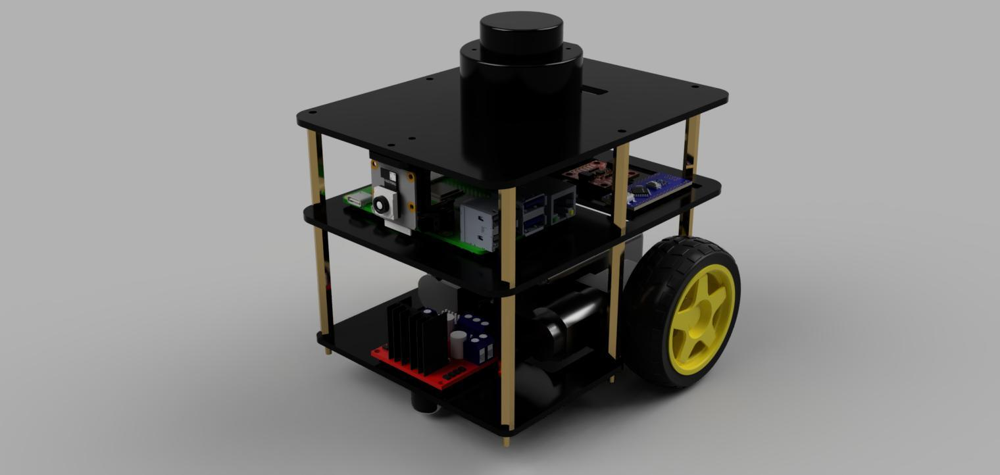
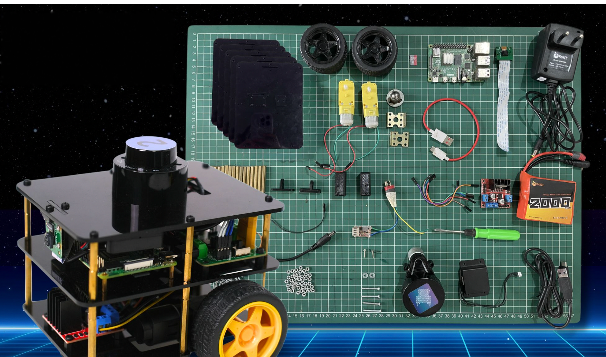
Lectures 12-14 follow the FastBot reference design from The Construct's course Build Your First ROS 2 Based Robot. Everything here — part choices, pin assignments, firmware, the ROS 2 driver, the CAD documents, the Gazebo plugins — comes from that build, so every command and config file in these three sessions is copy-paste-correct against real, published hardware.
One consequence worth flagging up front: the ROS 2 package names stay fastbot_*
(fastbot_description, fastbot_bringup, fastbot_gazebo), the default
robot_name stays fastbot, and the Pi's hostname is fastbot. That is
deliberate, not a typo — it keeps your workspace aligned with the upstream CAD documents and reference
repositories. "Forge" is what you call the machine on your bench; fastbot is what its software
calls itself. If you'd rather rename everything, do it after Lecture 14, when nothing external
depends on the names any more.
By the end of this session, Forge's wheels will physically spin under closed-loop encoder
control, off its own battery, and its Raspberry Pi will be running ROS 2 Humble over SSH. By the end of
Lecture 13 it will drive from /cmd_vel, describe its own body in URDF, and publish LiDAR and
camera data. By the end of Lecture 14 it will exist in Gazebo and wear a 3D-printed cover you designed.
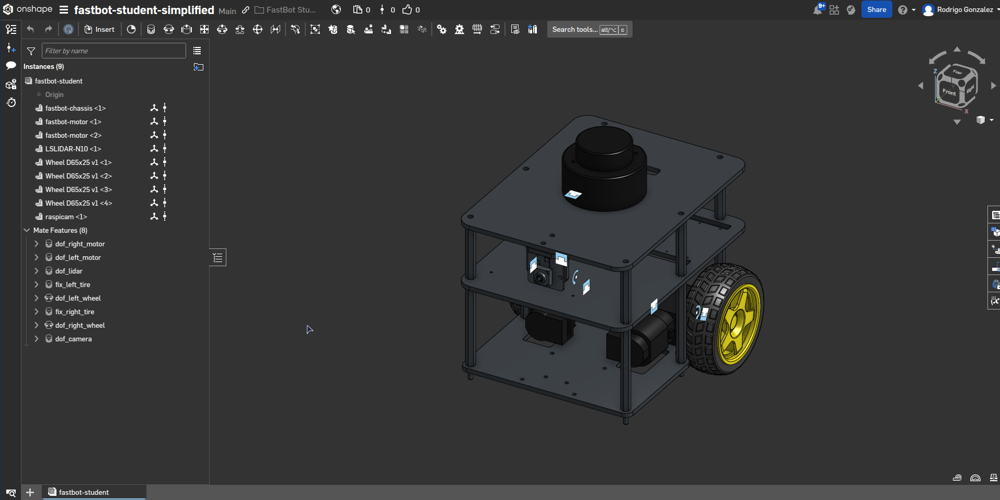
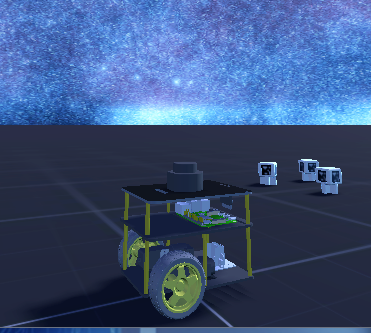
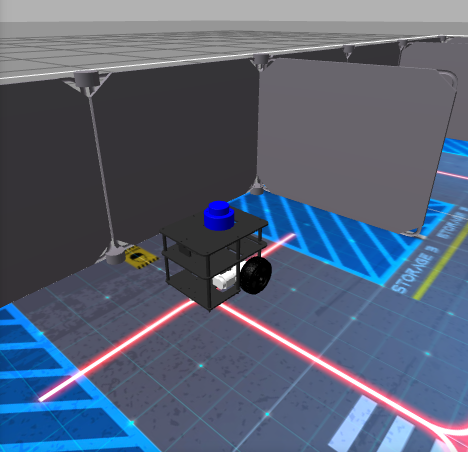
Get every part in front of you before wiring anything. Nothing here is exotic; it is all standard hobby robotics stock, and it is also sold as a single pre-boxed kit if you'd rather not source it piece by piece.
| Category | Item | Key spec | Qty | Notes |
|---|---|---|---|---|
| Motors & Motion | DC gear reduced motor with encoder (TT-style) | 5-12 V motor, encoder powered 3.3-5 V | 2 | 90° body for a compact chassis; usually ships with a bracket and a 6-wire connector — §12.3 |
| Wheels | 65 mm diameter × 25 mm wide | 2 | These two numbers reappear in the URDF (W13) and the Gazebo diff-drive plugin (W14) | |
| Ball caster | Passive, omnidirectional | 1 | The third ground contact — two wheels alone are not statically stable | |
| Electronics & Control | L298N motor driver board | Dual H-bridge, PWM speed control | 1 | Drives both motors from one board — §12.4 |
| Arduino Nano (or compatible) | ATmega328P, USB-mini | 1 | Owns the real-time motor loop — §12.4 | |
| Raspberry Pi 4 | 4 GB+ RAM, microSD 32 GB+ (A1/A2) | 1 | Ubuntu Server 22.04 + ROS 2 Humble — §12.11 | |
| LSLiDAR N-10 + Raspicam | 360° USB-C LiDAR; Pi Camera Module 2 (CSI) | 1 each | Brought up in Lecture 13 — buy now, wire later | |
| Cables & Power | LiPo battery | 3S, 11.1 V, 2200 mAh, 35 C | 1 | Sized against a real power budget in §12.8-12.9 |
| DFRobot Power Module | Regulated 12 V + 5 V distribution | 1 | Feeds motors and Pi from one pack — §12.10 | |
| Dupont jumper cables | 20 cm, female-female and male-male | 1 set each | You will use more of these than you expect | |
| USB cables | USB-mini (Nano), 90° USB-to-USB-C (LiDAR), USB-C (Pi power) | 1 each | The 90° connectors matter — straight plugs foul the chassis | |
| Fasteners & Mounting | M3 hardware | 4 cm male-female spacers, 6/12 mm nylon screws, nylon spacers, nuts | ~30-40 | Plate stack and motor mounts |
| M2.5 hardware | 10 mm spacers, 6 mm screws, nuts | ~12 | Raspberry Pi standoffs | |
| M2 hardware | 6 mm and 20 mm screws | ~10 | Camera and small brackets | |
| Safety | LiPo-safe charging bag or case | — | 1 | Same lithium discipline as Lecture 11's LIMO battery |
The exact parts above are the ones the reference build uses, and the pin numbers, voltages and firmware in this session are correct for them. Supply varies by region and by year, though, and the skills this arc teaches — reading a datasheet, budgeting power, wiring an H-bridge, calibrating an encoder — transfer completely to a near-equivalent part. Buy what's available that matches the specs in this table, and re-verify every number against your specific part's actual datasheet before wiring it in.
Lay every item from this table out on your bench. For each one, write down its single most important spec for this build — the one number that would break the design if it were badly wrong. (For the battery that's arguably three numbers; §12.9 explains why.)
Choosing the motors is the single most consequential decision about how Forge interacts with the physical world. Forge is small and light, so almost any hobby gear motor could physically move it — which means the choice comes down to two things that have nothing to do with raw torque.
Whatever voltage the motors need, the battery has to supply — and the same battery also has to feed the Raspberry Pi, the LiDAR, and the camera. Motors rated for 12 V hit the sweet spot: they're the most widely available class, they typically run happily anywhere in a 5-12 V range, and 12 V sits comfortably within reach of a 3S LiPo (11.1 V nominal, ~12.6 V charged) that can also feed a 5 V rail for everything else. §12.8-12.10 close that loop.
An encoder tracks how far the motor shaft has actually turned. Without one you have an open-loop system: you command "half power" and hope. With one you have a closed-loop system: the controller reads back real rotation and corrects the command until the wheel is genuinely doing what you asked. The practical difference is visible — closed-loop motion is smoother, holds speed under load, and drives straighter, because the two wheels no longer drift apart just because one motor happens to be slightly stronger than the other.
Beyond smooth motion, the encoder counts are what Forge's driver node turns into /odom in
Lecture 13 — the same wheel odometry you fused with an IMU through an EKF back in Lecture 9, and the same
signal AMCL and Nav2 lean on in Lecture 10. A robot without encoders cannot do dead reckoning at all.
And since a motor with an integrated encoder costs barely more than one without, there is no reason to
compromise here.
Those two constraints land on a very common, very cheap part: the DC gear reduced motor with encoder.
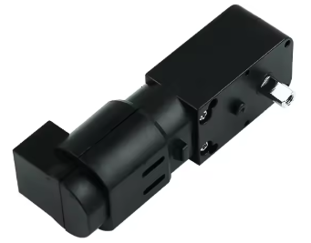
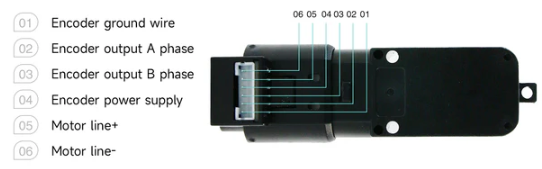
| Wire | Signal | Connects to | Notes |
|---|---|---|---|
| 01 | Encoder ground | Nano GND | Logic-level ground, shared with the Nano |
| 02 | Encoder output, A phase | Nano digital input | Square wave; phase-offset from B |
| 03 | Encoder output, B phase | Nano digital input | The A/B edge order gives direction — the quadrature idea from Lecture 11, §9.4 |
| 04 | Encoder power supply | Nano 5 V (3.3-5 V) | Over-voltage here can destroy the encoder. Check before connecting. |
| 05 | Motor line + | L298N OUT terminal | High current — never to an MCU pin |
| 06 | Motor line − | L298N OUT terminal | Swapping 05/06 simply reverses spin direction |
Wire colours on these motors are not standardised across vendors, and frequently differ between batches of the same model from the same supplier. A red wire on one motor might be encoder power; on the next unit out of the same bag, red might be a motor terminal carrying real current straight into a signal pin that was never designed for it. This is the single most common way to release the magic smoke from a fresh motor or Nano. Every time you wire a motor — even one that looks identical to yesterday's — check the pinout published by the seller you bought it from, and confirm it against Figure 12.7.
Using the tick-to-distance relationship from Lecture 11
(distance_per_tick = (2 × π × R) / N), and Forge's 65 mm wheel
(R = 0.0325 m): if your encoder turns out to produce 3450 counts per wheel revolution
(you'll measure the real figure in §12.7), how far does Forge travel per encoder count? How many counts
make one metre?
A motor connected straight to a battery spins one way, at one speed, forever. To make it "smart" — fast, slow, forward, backward, on demand — two pieces of hardware sit between the battery and the motor.
A DC motor reverses when you reverse the polarity across its terminals. Doing that under software control means an H-bridge: four switches arranged so that closing one diagonal pair drives the motor one way and closing the other pair drives it the other. You met this concept on LIMO in Lecture 11, sealed inside the chassis. On Forge it's a board on your bench: the L298N.
The L298N does three jobs at once:
PWM controls power by switching a signal on and off very rapidly and varying the fraction of time it's on — the duty cycle. 100% duty cycle means the signal is always on, so full power. 50% means it's on half the time, so roughly half power. 0% means always off, so no power. The motor's own inertia smooths the chopped supply into steady rotation. Below some low duty cycle — the motor's deadband — you get audible buzzing and no visible motion at all, exactly the symptom Lecture 11 warned you to expect on real hardware.
Something has to produce the PWM signal. It could in principle be the Raspberry Pi — but it shouldn't be. Forge uses a small Arduino Nano (or any compatible ATmega328P board) dedicated to the motor loop.
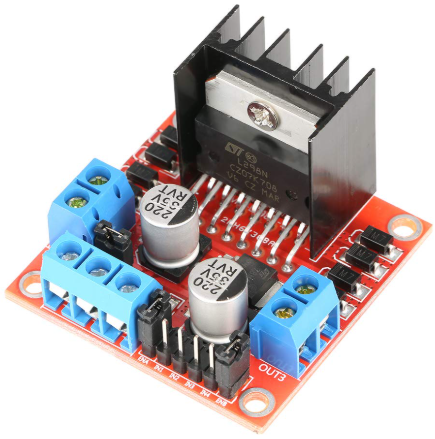
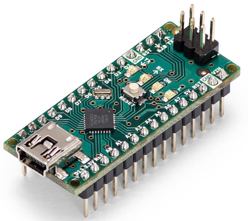
| Why a dedicated MCU? | What it means in practice |
|---|---|
| Stable, reliable PWM generation | The Nano has dedicated hardware PWM timers, so the signal stays smooth and consistent. On a Linux PC, PWM is software-scheduled — a heavy computational load can visibly degrade the signal. |
| Real-time performance | The Nano runs one loop and nothing else, so motors respond immediately. A general-purpose OS is not real-time; other processes introduce delays and jitter. |
| Offloading the main computer | The Pi should spend its cycles on ROS 2 nodes, perception and autonomous navigation — not on bit-banging a motor signal. It just tells the Nano what speed it wants. |
This is the exact same split AgileX designed into LIMO and you studied in Lecture 11: a general-purpose Linux computer running ROS 2, and a separate embedded controller that owns motor PWM and encoder reading, talking to each other over a serial link. Forge's Nano is that lesson applied by your own hand. A heavy perception callback on the Pi must never be able to delay a motor command long enough for Forge to behave unpredictably. Split "thinking" from "moving," and you'll recognise the pattern on almost every serious wheeled robot you meet after this course.
Read that diagram carefully — it is the whole of §12.5 in one picture, and the dotted encoder lines closing the loop back to the Nano are what makes Forge's motion closed-loop rather than hopeful.
You wire Forge's left motor, power it on, command a small positive velocity — and the wheel spins backward. Name two different places in the chain (Nano pin → L298N → motor terminals) where a simple wiring choice could cause this, and how you'd fix each one without touching any code.
Under normal cruising each motor draws roughly 1.5 A (3 A combined, from the budget in §12.8). A stalled motor — a wheel wedged against a curb — briefly draws several times its running current. If a stall pushes one motor to 4× its normal draw, is that still inside the L298N's per-channel rating? What does that tell you about the limits of a power budget built only from steady-state numbers, and where in the wiring chain would you add a fuse?
Time to connect things. Work through this in order, and keep the wheels off the ground (or the motors unmounted) until §12.7 — a mis-wired first test that sends the robot off the bench is a very avoidable way to break a LiDAR.
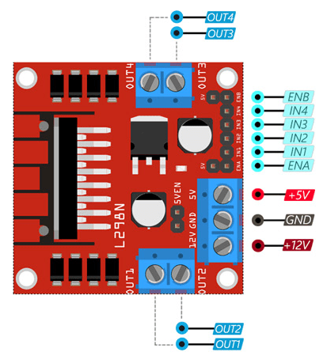
| Pin group | What it is | How Forge uses it |
|---|---|---|
OUT1 OUT2 | Motor A power terminals | Left motor's Motor line+ / Motor line− |
OUT3 OUT4 | Motor B power terminals | Right motor's Motor line+ / Motor line− — flipped relative to the left, because the motors face out in opposite directions |
+12V GND | Motor supply | From the 11.1 V LiPo (via the power module, from §12.10). Red is always positive, black is ground. |
+5V | Regulated 5 V output | Leave disconnected. It stays in place only as the source for the ENA/ENB jumpers. |
IN1 IN2 | Motor A direction inputs | Driven by the Nano |
IN3 IN4 | Motor B direction inputs | Driven by the Nano |
ENA ENB | Per-motor enable pins | Leave the jumpers on, tying them to 5 V (permanently enabled) |
The direction logic is simple, and identical for both channels:
IN1 = HIGH, IN2 = LOW -> Motor A forward
IN1 = LOW, IN2 = HIGH -> Motor A backward
IN1 = LOW, IN2 = LOW -> Motor A stopped
(IN3 / IN4 behave identically for Motor B)
Reasonable question — many L298N tutorials put PWM on ENA/ENB and use IN1-IN4 as pure digital direction
pins. Forge does it the other way round. The four Nano pins chosen below (D5, D6,
D9, D10) are all hardware-PWM-capable pins on the ATmega328P, and
the ros_arduino_bridge firmware you'll flash in §12.6 drives them with PWM: to go
forward at 60% it holds one input at 0 and PWMs the other at 60% duty. Enable stays permanently high, so
the jumpers can stay where the board shipped them. Two valid designs; the firmware decides which one you're
using, which is exactly why the pin assignments below are not arbitrary.
Connect each motor's power pair (wires 05 and 06, the red 🔴 and black ⚫ pair on most units — confirm against your pinout) to the OUT terminals. Because one motor is physically mirrored relative to the other, its two wires go on flipped compared to the first.
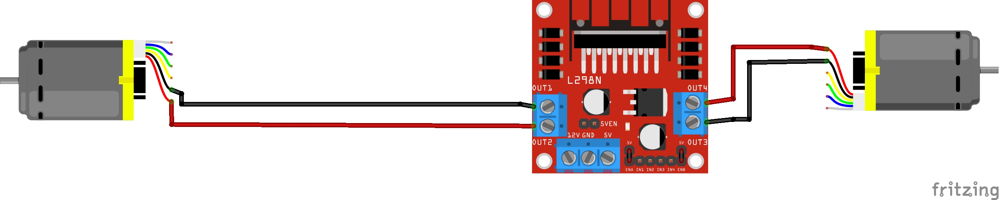
If you flip a motor pair the wrong way, the worst case is that Forge drives backwards when you tell it to go forwards during the §12.7 bench test. Swap that motor's two OUT wires and move on. This is genuinely a 30-second fix, and it is a much better failure mode than the alternatives elsewhere in this section.
The IN pins go to digital GPIO pins on the Nano. The specific pin numbers are not arbitrary — they must match what the firmware in §12.6 expects:
| L298N pin | Arduino Nano pin | Role in firmware |
|---|---|---|
IN1 | D6 | Left motor, one direction (PWM-capable) |
IN2 | D10 | Left motor, other direction (PWM-capable) |
IN3 | D9 | Right motor, one direction (PWM-capable) |
IN4 | D5 | Right motor, other direction (PWM-capable) |
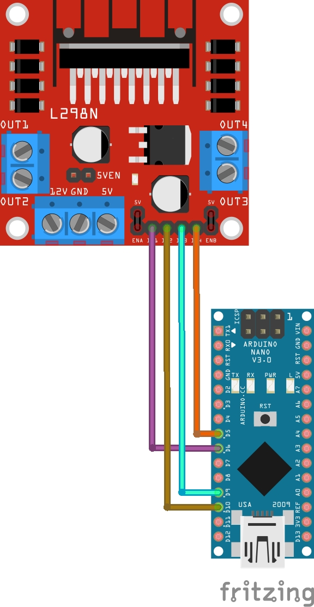
Now close the feedback loop. Each motor's two encoder signal wires (02 and 03) go to the Nano:
| Motor | Encoder output | Arduino Nano pin | Why this pin |
|---|---|---|---|
| Left (Motor A) | A phase | D2 | D2 and D3 are the ATmega328P's two hardware interrupt pins — the fastest, most reliable way to catch encoder edges |
| B phase | D3 | ||
| Right (Motor B) | A phase | A5 | Analog pins used as digital inputs, read via pin-change interrupts |
| B phase | A4 |
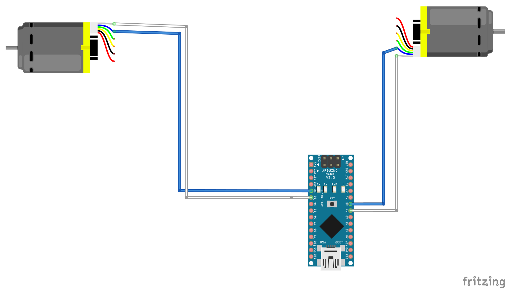
The encoders also need power. For this bench test, take 5 V and GND from the Nano's own pins (wires 04 and 01). Later, once the power module is in place (§12.10), you'll move that 5 V feed to the robot's regulated rail instead.
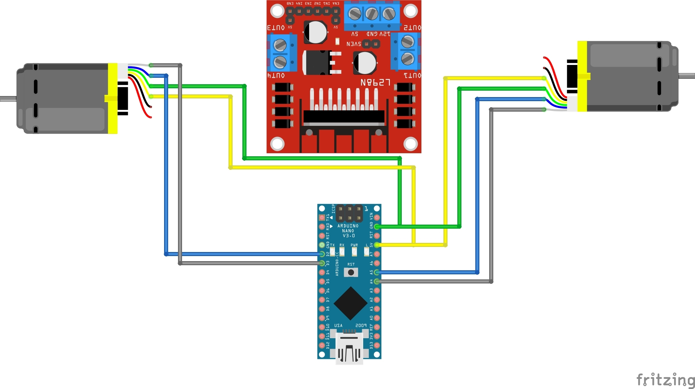
For the very first test the LiPo connects directly to the L298N's +12V /
GND terminals, through a T-connector pigtail whose bare ends you can screw into the terminal block.
(§12.10 inserts the power module between them permanently — this direct connection is a temporary,
motors-only test rig.)
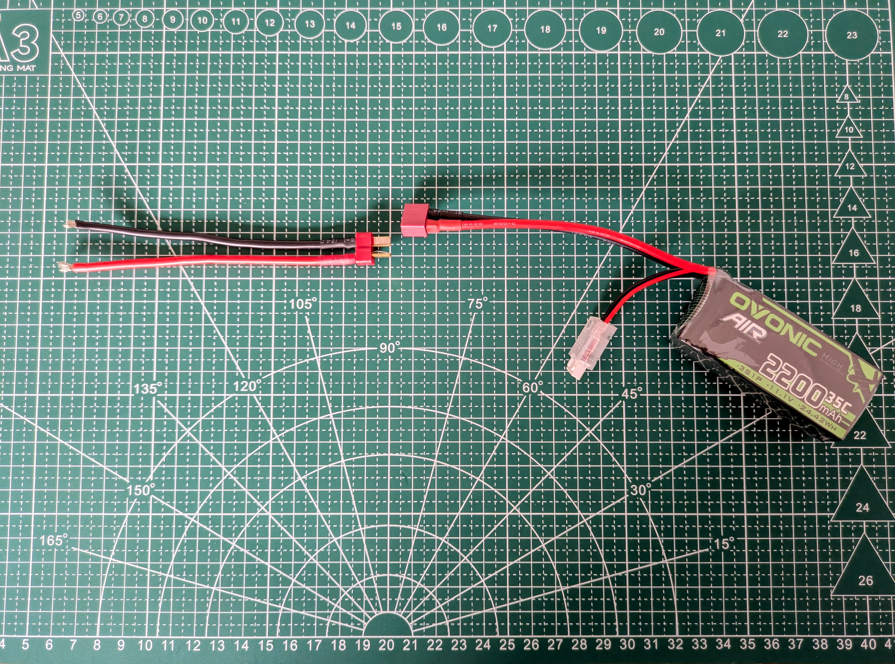
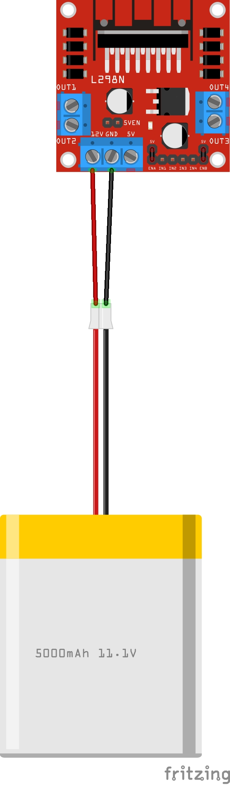
This is the moment where a mistake is expensive. Red is positive, black is ground, and a reversed connector on a freshly wired robot is a fast way to destroy an L298N, a Nano, or eventually the Pi. Unlike the flipped motor wires in Step 1, this one does not politely fail — it releases smoke. Meter it if you have any doubt.
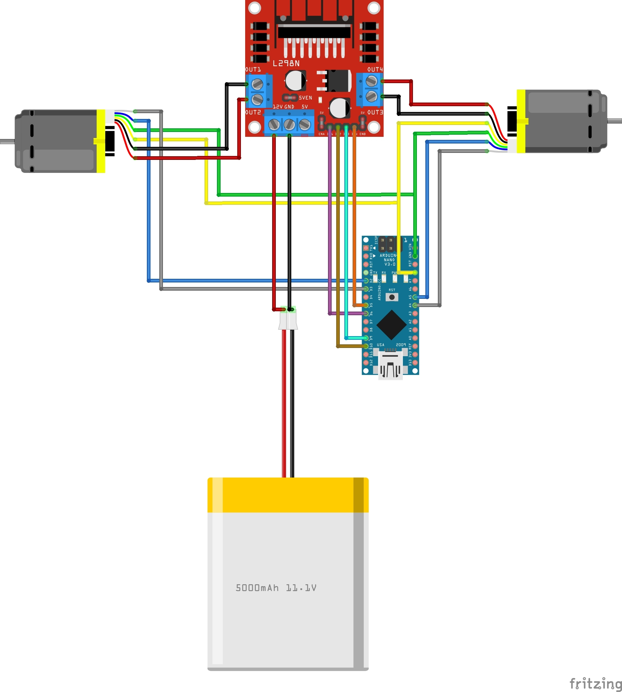
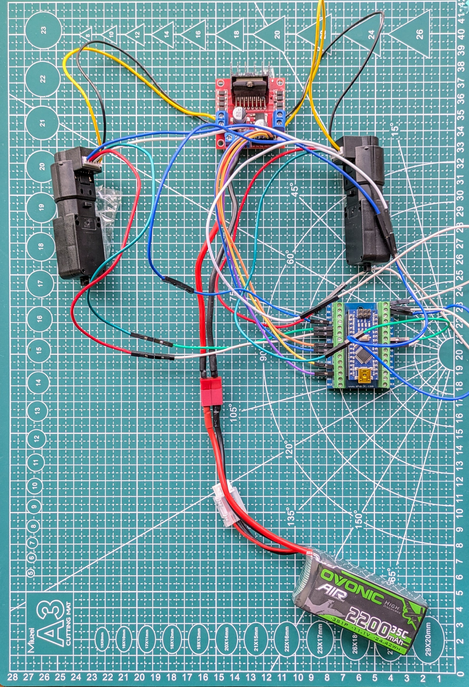
Before powering anything: photograph your own wiring from directly above and annotate it against Figure 12.18 — every wire in your photo should correspond to one in the diagram, and vice versa. Any wire you can't account for is a bug you'd rather find now than after the battery is connected.
ros_arduino_bridge on the Nano
The Nano is wired but empty. It needs firmware that (a) reads the encoders, (b) closes a velocity loop, and
(c) accepts commands over serial. Rather than writing that from scratch, Forge uses a well-established
open-source package: Josh Newans' fork of ros_arduino_bridge. It converts velocity
commands arriving over UART into PWM on the L298N's inputs, and reports encoder counts back.
The Nano connects to your development PC with a USB-to-USB-mini cable. Do this from your own PC, not from the Pi — you'll want the Arduino IDE's GUI.
On Windows or macOS, install the IDE from arduino.cc/en/software instead.
~/git-repo/ros_arduino_bridge/ROSArduinoBridge/ROSArduinoBridge.ino./dev/ttyUSB0 or similar.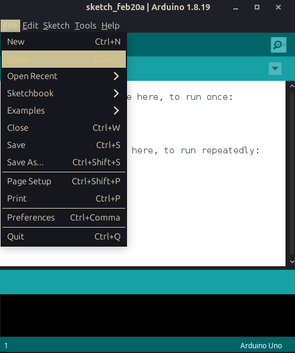
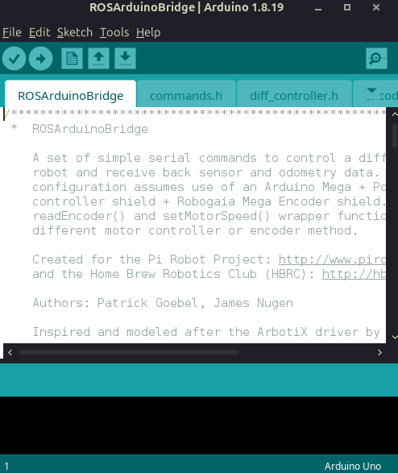
ROSArduinoBridge.ino loaded. Note the sibling tabs: commands.h, diff_controller.h.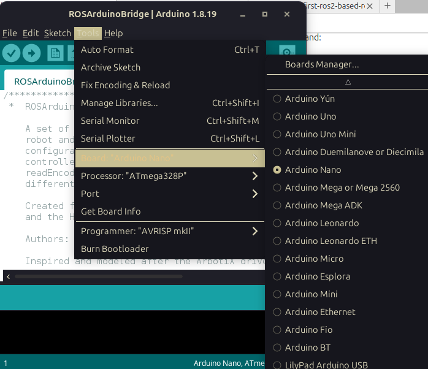
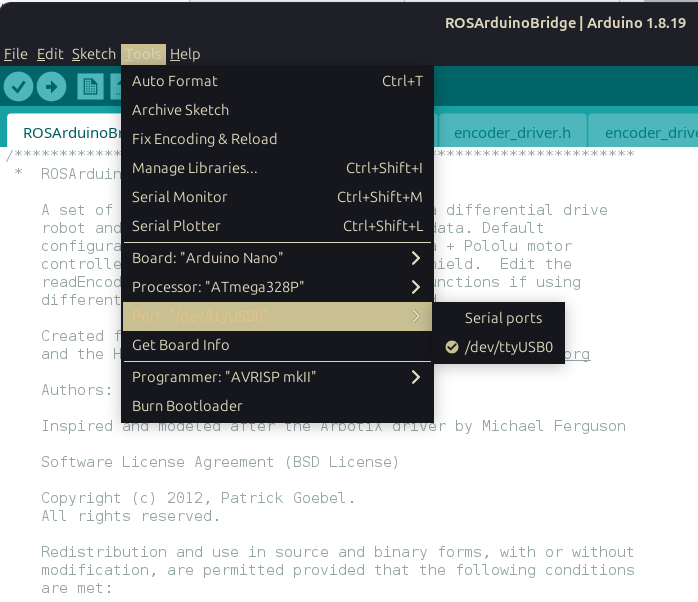
A very common snag with clone Nanos: the upload fails with a timeout or avrdude: stk500_recv()
errors even though the board and port are right. Most inexpensive Nano clones ship with the old
bootloader. Go to Tools → Processor and switch to
ATmega328P (Old Bootloader), then upload again. This is not in the reference material and
it will cost you twenty minutes if nobody tells you.
✅ With a successful upload, the Nano's firmware is live. Time to make something move.
This is the payoff for §12.3-12.6. Before you start: make sure the battery is powering the motors through the L298N, the Nano is connected to your PC by USB, and the wheels are off the ground.
You need a tool to talk to the Nano over serial. The reference build uses
SerialTool (Windows, macOS, Linux); the Arduino IDE's
built-in Serial Monitor works too, as does screen /dev/ttyUSB0 57600 if you prefer a terminal.
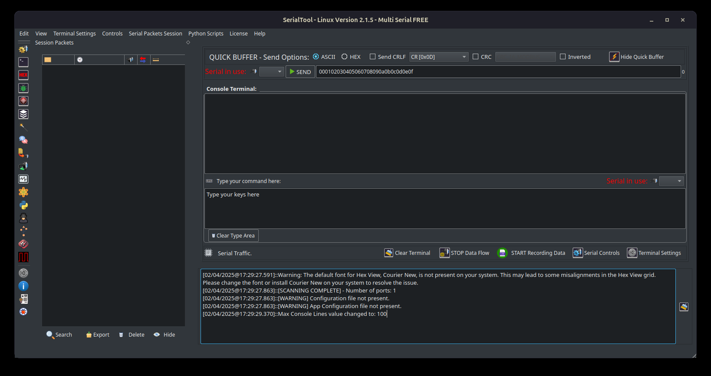
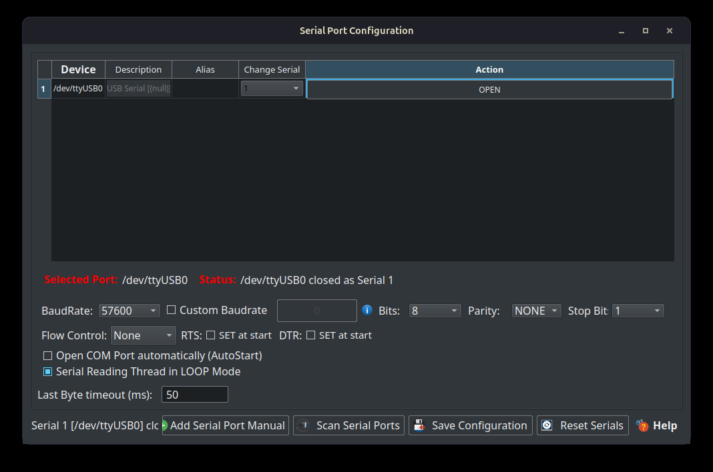
The baud rate must match the firmware exactly. A mismatch does not produce an error — it produces garbage
bytes, silently. Remember this number: it reappears as the baud_rate parameter of the ROS 2
driver node in Lecture 13, and it must match there too.
| Command | Meaning | Example |
|---|---|---|
o <pwm1> <pwm2> | Open loop. Raw PWM per motor, −255 to 255. | o 255 255 — both motors, full power forward |
e | Read the current encoder counts for both motors | e → 1204 1198 |
r | Reset both encoder counters to zero | r |
m <cpl1> <cpl2> | Closed loop. Target encoder counts per PID loop, per motor. | m 115 115 — see the calibration below |
🎉 Your robot's wheels just moved under your own wiring and your own firmware. If one wheel turns the wrong way, that's the Step-1 fix from §12.5 — swap that motor's two OUT wires.
Non-zero, changing numbers mean the hall-effect encoders are being read correctly. A channel stuck at zero means a wiring fault on that motor's A/B lines or its 5 V/GND feed. Fix that before continuing — closed-loop control without encoders is worse than open loop, not better.
The controller needs to know how many encoder counts correspond to one full motor revolution. This value —
counts per revolution (encoder_cpr) — is a property of your specific
encoder-and-gearbox combination, so you have to measure it:
re. That number is one estimate of counts/rev.encoder_cpr.For the reference build this lands around 3450 counts/rev. Yours will differ — a different gear ratio changes it completely.
The m command doesn't take counts per revolution — it takes counts per PID loop.
ros_arduino_bridge runs its PID loop at 30 Hz, so converting is one division:
counts_per_loop = counts_per_revolution / PID_loop_rate
= 3450 counts/rev / 30 loops/sec
= 115 counts/loop (for a target of 1 rev/sec)So each PID cycle should accumulate 115 counts if the wheel is turning once per second. That same conversion, generalised, is exactly what the ROS 2 driver node computes in Lecture 13 — you're deriving it by hand now so the code isn't magic later.
Verify it with a stopwatch and a mark on the tyre: ten revolutions should take about ten seconds. If it doesn't, your measured counts/rev is wrong — repeat the calibration.
In Lecture 13 you'll meet two reference files that declare encoder_cpr defaults of
2500 (the driver launch file) and 2550 (the bringup launch file) — neither
of which is the 3450 derived above. That's not a trick question, it's what real projects look like: a
default value gets typed once, copied into a second file, and drifts. Your measured value is the
only one that's true for your robot. Set it deliberately in both places, and treat any
hardcoded default you didn't measure yourself as a placeholder.
Command m 115 115 and, while the wheels are spinning freely, gently pinch one tyre to load it.
Listen and watch. What does the controller do? Now do the same while commanding o 128 128
(open loop) instead. Describe the difference in one sentence — you have just demonstrated, physically, why
§12.3 insisted on encoders.
Record your own measured encoder_cpr for both motors separately. Are they identical? If they
differ by more than a percent or two, what would that do to Forge's ability to drive in a straight line
under open-loop control — and why does closed-loop control largely rescue you? Keep this number
written down; Lecture 13 needs it.
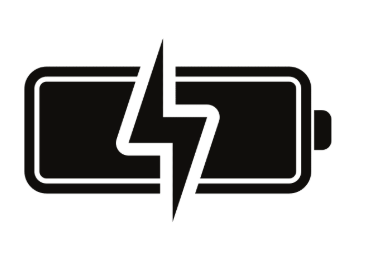
The motors run. Now they need to run off a battery you chose on purpose. Every component on Forge draws current at some voltage, and every watt has to come from a pack with finite stored energy. Before choosing a battery you need an honest power budget — not a guess.
The core formula:
P (watts) = V (volts) × I (amps)Applied component by component:
| Component | Voltage (V) | Current draw (A) | Power (W) = V × A |
|---|---|---|---|
| Raspberry Pi 4 | 5 | 2.5 | 12.5 |
| Motor driver (L298N) | 12 | 2 | 24 |
| Motors (2×) | 12 | 3 | 36 |
| Camera | 5 | 0.5 | 2.5 |
| LiDAR | 5 | 0.7 | 3.5 |
| Total | — | 8.7 | 78.5 W |
This table assumes every component draws its rated current simultaneously and continuously — motors at full sustained torque, everything running at once. Real usage is usually kinder, which is exactly why a power budget is a design ceiling to size against, not a prediction of typical use. Budget for the worst case and get a pleasant surprise; budget for the average and watch a demo die in front of an audience.
From total power draw you can estimate runtime, once you know a pack's energy capacity:
Energy (Wh) = Voltage (V) × Capacity (Ah)
Runtime (h) = Energy (Wh) / Power (W)Worked through for the 11.1 V, 2200 mAh (2.2 Ah) pack from §12.9:
Energy = 11.1 V × 2.2 Ah = 24.42 Wh
Runtime = 24.42 Wh / 78.5 W ≈ 0.31 h ≈ 18-22 minutesEighteen to twenty-two minutes of guaranteed worst-case runtime is short — and that is exactly the point of doing this arithmetic before buying a battery rather than after.
You just budgeted assuming every component draws its rated current all the time. In reality, does a motor draw the same current sitting still under load, accelerating from rest, and cruising at constant speed? Which of those three is the number in the table closest to — and what does that mean for how much headroom this budget really has?
Swap Forge's camera for a higher-resolution model drawing 5 V at 1.1 A instead of 0.5 A. Recompute the total power and the resulting runtime against the same 24.42 Wh pack.
With the power requirements known, you can pick a pack. Forge uses a LiPo (lithium-polymer) — a rechargeable chemistry with high energy density that can also deliver high discharge currents. Unlike traditional lithium-ion cells, LiPos use a soft polymer electrolyte, which allows flexible, compact shapes. They're the standard choice in robotics, drones and RC because they hold voltage well under load and handle high power demands efficiently.
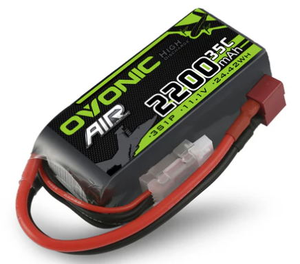
| Spec | Forge's pack | What it tells you |
|---|---|---|
| Nominal voltage | 11.1 V (3S) | Three cells in series at 3.7 V each; ~12.6 V fully charged. Suits 12 V motors, and regulates down cleanly to 5 V for the Pi. |
| Capacity | 2200 mAh (2.2 Ah) | Total stored charge; feeds straight into the runtime formula in §12.8. |
| Discharge rating | 35 C | Maximum safe continuous current = Capacity(Ah) × C = 2.2 × 35 = 77 A. |
| Connector | XT60 / T-connector | Match the gender and type to your harness before you order. |
Forge's total draw is about 8.7 A (from the budget table). Against a 77 A continuous
rating, the pack is nowhere near being the bottleneck — which is exactly the confirmation you want. The failure
mode to avoid is the opposite: a pack with plenty of energy capacity but too low a C-rating for your
peak current. Under load it sags badly or trips its own protection, which is the same voltage-sag warning sign
Lecture 11 taught you to watch for in LIMO's battery_voltage field.
Everything Lecture 11 taught about lithium handling on LIMO applies without exception here: never leave a pack fully discharged for long, always charge with a proper balance charger in a fire-safe bag or case on a non-flammable surface, never puncture or short the terminals, and retire any pack showing swelling, unusual heat or casing damage. A DIY build adds a risk LIMO's sealed pack doesn't have — you wired the connector. Double-check polarity before every first connection of a new harness, and never over-discharge: below roughly 3.0 V per cell you are permanently damaging the pack.
Recompute the full power table and runtime for a version of Forge with a second camera added (assume the same 5 V / 0.5 A). Given a target of at least 30 minutes of runtime under full load, what minimum capacity (in Ah) would you need at 11.1 V? Then check your answer against the C-rating requirement: does a pack of that capacity still comfortably supply the peak current, and would you change anything else about the design to hit 30 minutes more gracefully than by just buying a bigger battery?
One battery, several very different consumers. The motors want ~12 V and are electrically noisy. The Raspberry Pi wants a clean, well-regulated 5 V and will misbehave — or corrupt its SD card — if that rail sags. The LiDAR, camera and Nano also live on 5 V. You need something between the pack and the robot that transforms and distributes power.
Forge uses the DFRobot Power Module. It takes the raw LiPo input and provides both a switched 12 V output for the motor driver and a regulated 5 V output for everything else, with a physical power switch — which is more valuable than it sounds when you want to kill a runaway robot in a hurry.
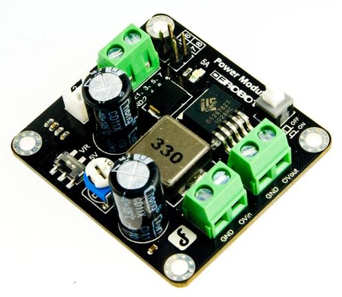
Vin from the battery; Vout to the L298N; a regulated 5 V rail for the Pi and sensors.Remember the direct battery-to-L298N connection from §12.5, Step 4? Now the module goes between them:
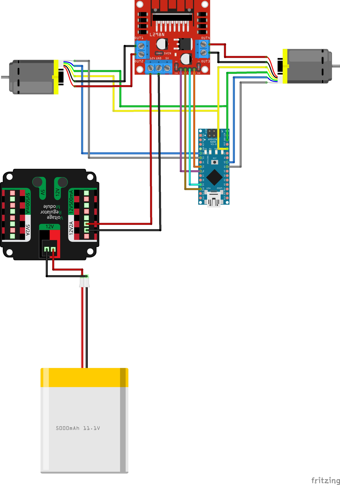
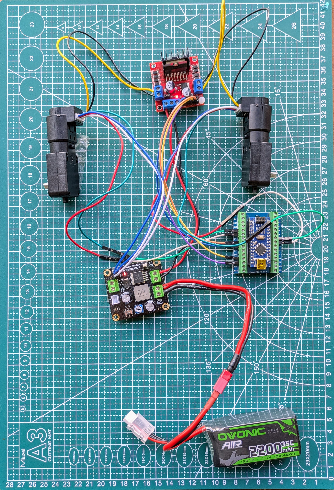
Look at the diagram again: the module feeds two separate rails. That separation is not cosmetic. Starting, stopping and reversing a motor induces voltage spikes on its supply line. If that same rail powered the Pi's or the Nano's logic, those spikes could reset or corrupt them mid-operation — and a Pi that browns out during an SD-card write can lose its filesystem. Keeping motor power and logic power on distinct regulated rails, joined only by a common ground, is standard practice on essentially every motor-driven robot, and it echoes the same power-distribution reasoning Lecture 11 walked through for LIMO's own battery and BMS.
✅ Forge now has power distribution. Flip the module's switch and it delivers 12 V to the motors and a clean 5 V rail that, from §12.11 onward, will run the robot's brain.
Move the encoders' 5 V/GND feed off the Arduino Nano's pins (where §12.5 temporarily put them) and onto the power module's 5 V rail — but keep the Nano's GND connected to that same ground. Why is that last part not optional? What happens to a digital signal whose sender and receiver don't share a ground reference?
Forge's brain is a Raspberry Pi 4 running Ubuntu Server 22.04 LTS (64-bit) — a headless, no-desktop build, because a robot you drive around a room is not a machine you want to plug a monitor into. Ubuntu (rather than Raspberry Pi OS) because ROS 2 Humble targets Ubuntu 22.04 directly.
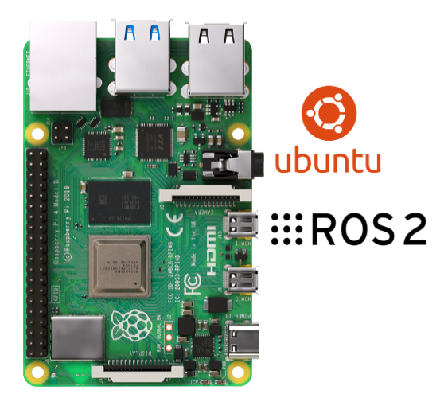
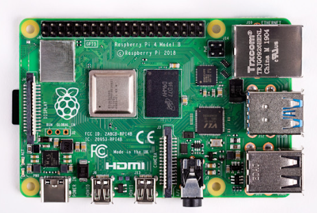
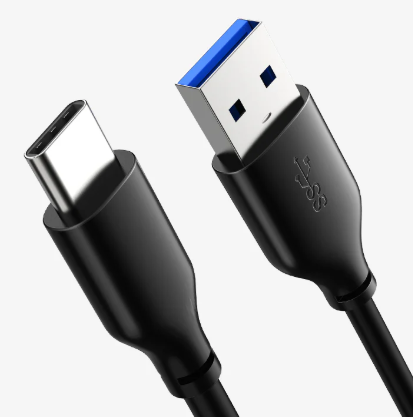
You can set the Pi up either over SSH (a network protocol for secure remote access — you work from your own PC) or with a screen and keyboard (mini-HDMI plus USB). SSH is dramatically more convenient once you're chasing a robot around a room, and the rest of this course assumes it. The screen-and-keyboard route stays available as a recovery path if networking goes wrong.
Use the Raspberry Pi Imager. On Ubuntu:
On Windows or macOS, download it from raspberrypi.com/software.
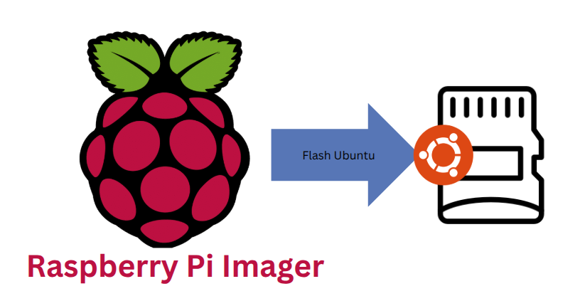
fastbot, set a password, tick Configure wireless LAN and enter your SSID and Wi-Fi password, and tick Set locale settings for your region and keyboard layout.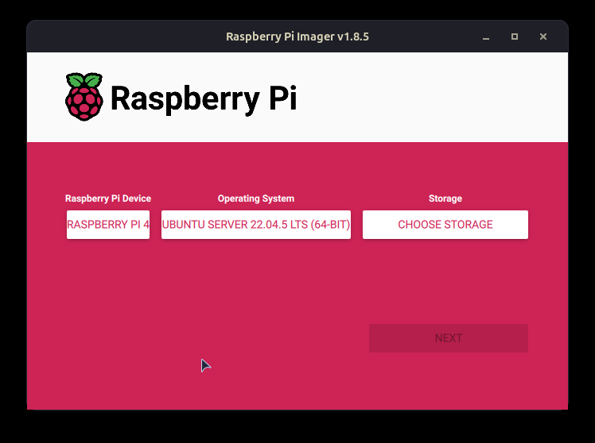
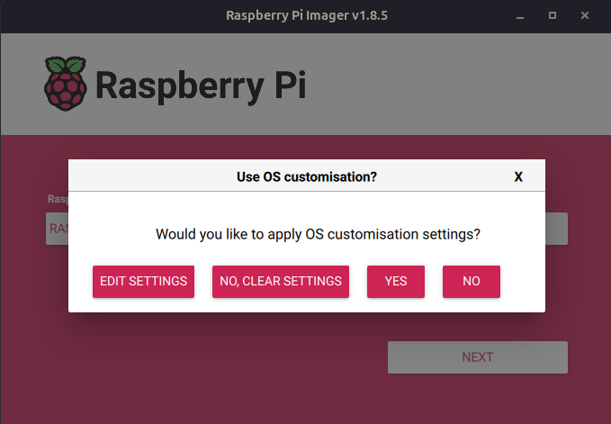
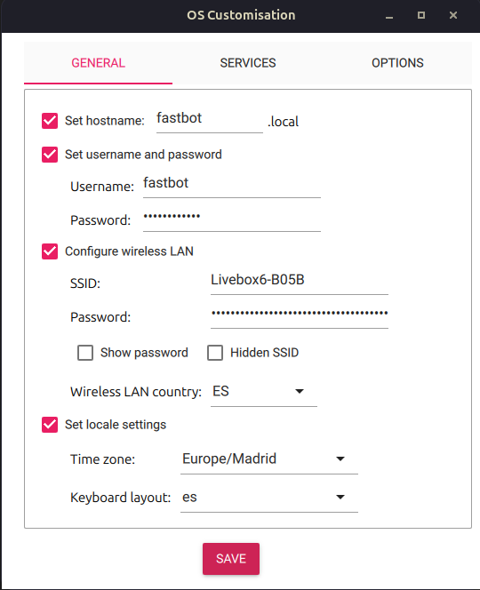
fastbot, username fastbot, Wi-Fi, locale.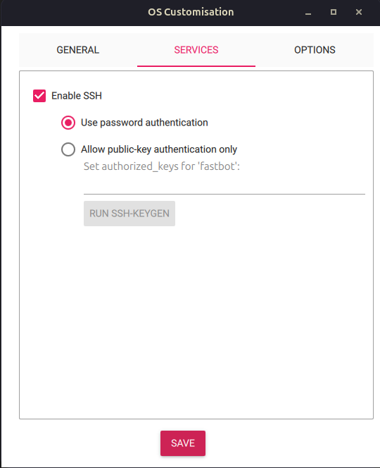
A headless install with SSH disabled is only reachable by plugging in a monitor and keyboard — which defeats the entire point, and on a Pi buried inside a chassis means partial disassembly. Double-check that checkbox before writing the image, every single time.
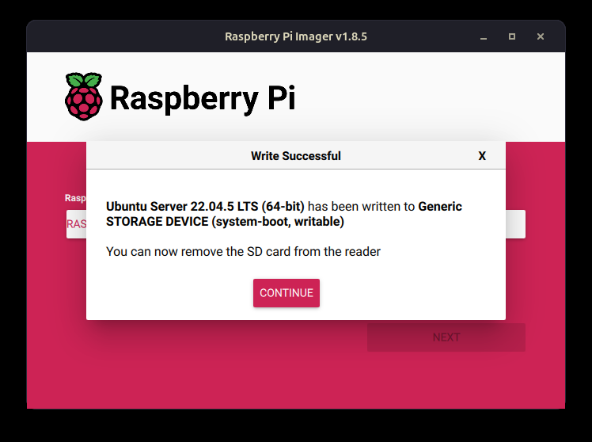
When a new device joins your network, your router's DHCP server hands it a more-or-less random address. That's fine for a laptop and miserable for a robot: you need the IP to SSH in, and you're about to hardcode connection details into scripts and launch files. Fix it before the Pi ever boots.
system-boot volume that appears./system-boot/network-config (you'll need permission to modify it).wifis section and replace it with the block below.network:
version: 2
renderer: networkd
wifis:
wlan0:
dhcp4: no
optional: true # allow booting even if Wi-Fi is unavailable
addresses:
- 192.168.1.100/24 # the static IP you are claiming
gateway4: 192.168.1.1 # your router's IP
nameservers:
addresses:
- 8.8.8.8
- 1.1.1.1
access-points:
"SSID_WIFI_NETWORK_HERE": # double-check this is exactly right
password: "PASSWORD_HERE" # and thisdhcp4: no stops the router assigning a random address.addresses: - 192.168.1.100/24 claims 192.168.1.100. Pick something outside your router's DHCP pool so nothing else is ever handed the same address.gateway4 must be your actual router address — commonly 192.168.1.1 or 192.168.0.1.Save, eject the card, insert it into the Pi, and power it on. After a minute or two:
✅ You are inside Forge's brain, over the network, with no monitor or keyboard ever attached to it.
Ubuntu Server ships with nothing ROS-related. Forge's Pi needs the same ROS 2 Humble install every other machine in this course has used — except this time you run it yourself, over SSH, on a completely blank system. Every command below runs on the Pi.
ros-base and not desktop
ros-humble-ros-base is the bare communication stack plus core tooling — no RViz, no
visualization, nothing that wants a display. That's exactly right for a headless robot: it installs faster,
uses far less of the SD card, and doesn't drag in GUI dependencies the Pi will never use. RViz runs on
your machine, subscribing over the network. teleop_twist_keyboard comes along because
Lecture 13 uses it to drive Forge by hand.
ROS 2 has to be sourced in each new shell, which is normally handled by adding one line to
~/.bashrc:
You just installed ros-humble-* packages. A student adds this line to the bottom of
~/.bashrc:
### rest of .bashrc
source /opt/ros/jazzy/setup.bash
They save, open a new terminal, and run ros2 topic list — and nothing works, or the shell
complains that the file doesn't exist. What's wrong? Work it out before reading the next box. (This exact
mistake appears in the published reference material for this build, which is precisely why it's worth
practising: copy-pasted setup lines pointing at the wrong distribution are one of the most common
real-world ROS 2 environment bugs, on any robot.)
Work through the diagnosis rather than jumping to the fix:
ls /opt/ros/.)echo $ROS_DISTRO print in a shell where the wrong line was sourced, versus a correct one?source itself give when the path doesn't exist — and why is it easy to miss in a login banner?
Then fix the line — it should read source /opt/ros/humble/setup.bash — re-source your shell,
and confirm with ros2 doctor or ros2 topic list.
### rest of .bashrc
source /opt/ros/humble/setup.bashTwo SSH sessions into the Pi, running the classic talker/listener pair:
Two independent processes publishing and subscribing over ROS 2, on hardware you flashed, networked and configured yourself. ✅ Forge's brain is alive.
Last step of the session: unplug the Pi from its mains charger and run it from the power module's regulated 5 V rail, so the whole robot lives off one battery.
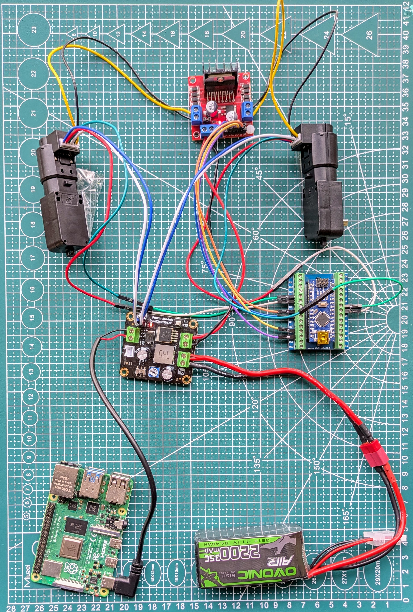
Reboot and SSH back in, then check dmesg | grep -i voltage and look for the Pi's
low-voltage lightning-bolt warnings. The Pi 4 is genuinely fussy about a clean 5 V under load, and an
undervolted Pi behaves like a flaky Pi — random freezes, dropped USB devices, corrupted SD cards — while
reporting nothing obviously wrong. This is the same "no error is not the same as working" discipline
Lecture 11 built around LIMO's error_code field, and Lecture 13 turns it into a full
debugging exercise.
ros_arduino_bridgeencoder_cpr measured for your hardwareThis session took Forge from a bag of components to a robot whose wheels physically spin under closed-loop encoder control, off its own battery, with a networked Linux brain running ROS 2. You chose motors on voltage and feedback rather than raw torque, wired an H-bridge and a microcontroller by hand, flashed real firmware, measured your own encoder constant instead of trusting a default, built an honest power budget and sized a pack against both its energy and its current rating, and stood up Ubuntu Server + ROS 2 Humble from a blank card. Lecture 13 gives Forge a ROS 2 nervous system, a body it can describe, and senses it can trust; Lecture 14 puts it in Gazebo, gives it a printed cover, and closes out the course.
ros_arduino_bridge and drove the motors with o, e, r and m over serial at 57600 baud.encoder_cpr and converted it to counts-per-PID-loop for a 30 Hz controller.network-config file, and reached a headless Pi over SSH..bashrc.Q1. Forge's BOM lists a rear ball caster. What breaks if you leave it out?
A two-wheel differential-drive robot has only two ground contacts, which isn't statically stable — without a third contact point the chassis tips forward or backward under its own weight or any acceleration.
Q2. Why does the encoder need its own 3.3-5 V power pin, separate from the motor terminals?
The encoder is a low-power digital signal source, while the motor terminals carry high-current drive power at up to 12 V. Feeding the encoder from the motor supply — or from any rail outside its rated range — risks destroying it.
Q3. Why does the motor loop run on an Arduino Nano instead of the Raspberry Pi?
Three reasons: dedicated hardware PWM timers give a rock-steady signal; a dedicated MCU gives real-time, predictable response with no OS scheduling jitter; and it frees the Pi for ROS 2, perception and navigation. It's the same SBC/embedded-controller split LIMO uses (Lecture 11).
Q4. On Forge, ENA and ENB are jumpered to 5 V. So where does speed control come from?
From PWM on the IN pins. D5, D6, D9 and D10 are all hardware-PWM-capable on the ATmega328P, and ros_arduino_bridge drives them with a duty cycle while holding the opposite input low. Enable stays permanently high.
Q5. Your encoder measures 3450 counts/rev and the PID loop runs at 30 Hz. What do you send to spin at 1 rev/s, and why that number?
m 115 115. 3450 counts/rev ÷ 30 loops/sec = 115 counts accumulated per PID loop cycle when the wheel turns once per second.
Q6. A pack has plenty of capacity (Ah) but too low a C-rating for Forge's peak current. What symptom would you expect under load?
Voltage sag under load, or the pack's own protection circuitry tripping — the same warning sign Lecture 11 taught you to watch for in LIMO's battery_voltage field.
Q7. (Gotcha) You installed ros-humble-* packages, sourced .bashrc, and ros2 topic list still misbehaves. Where's the bug most likely hiding?
In the distribution name inside the sourced path. A very common copy-paste mistake is source /opt/ros/jazzy/setup.bash when Humble is what's installed — it should read source /opt/ros/humble/setup.bash. Confirm with ls /opt/ros/ and echo $ROS_DISTRO.
Capacity(Ah) × C.network-config on the boot partition) to claim a static IP before first boot.encoder_cpr default (2500 or 2550 in the reference launch files) instead of measuring your own.setup.bash in .bashrc.